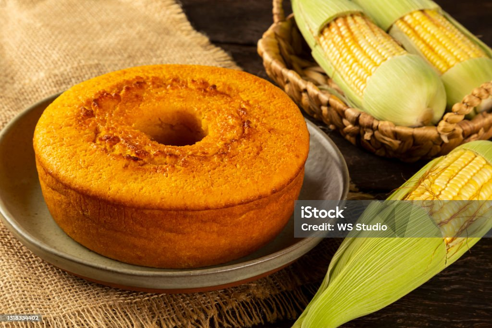

Bolo de Milho
Os três MELHORES bolos do BRASIL

Ingredientes
medida copo de requeijão
- 1 copo de leite
- 3 ovos
- 1 copo de milharina
- 1 colher de fermento em pó
- 1 e 1/2 copo de açúcar
- 1 lata de milho verde com a água
- 1/2 copo de óleo
Modo de Preparo
- Bata todos os ingredientes no liquidificador.
- Leve para assar em forma untada com margarina, asse até dourar.
- Fica meio molhadinho.
- É uma delicia.